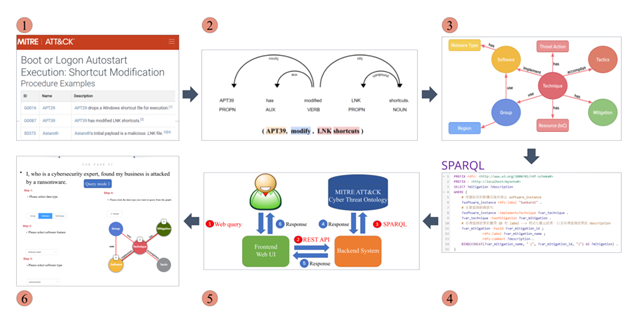

Abstract
Cyber threats have become more prevalent than ever. Cyber Threat Intelligence (CTI) reports and MITRE ATTCK® framework play an imperative role in helping experts and organizations assess current and potential attacks, such as Advanced Persistent Threats (APT). However, the task of extracting valuable information from unstructured texts remains an ongoing challenge. In this work, we present a framework for understanding and reasoning adversary tactics and techniques. We construct an ontology structure and propose an automatic information extraction method that is capable of integrating the parsed information from CTI reports into each instance. The ontology is represented in the Web Ontology Language (OWL) accessible with the SPARQL query language. Our evaluation shows that the proposed information extraction method outperforms other state-of-the-art neural network-based methods in terms of precision. Furthermore, our framework can effectively infer adversary information, which efficiently supports security analysts recognize tactics and techniques.
Keywords
- OWL
- Semantics
- Organizations
- Ontologies
- Big Data
- Information retrieval
- Cognition
Cite
@inproceedings{huang2022cybersecurity,
title = {{Building Cybersecurity Ontology for Understanding and Reasoning Adversary Tactics and Techniques}},
author = {Huang, Chiao-Cheng and
Huang, Pei-Yu and
Kuo, Ying-Ren and
Wong, Guo-Wei and
Huang, Yi-Ting and
Sun, Yeali S. and
Chen, Meng Chang},
booktitle = {2022 IEEE International Conference on Big Data (Big Data)},
pages = {4266--4274},
year = {2022},
doi = {10.1109/BigData55660.2022.10021134}
}